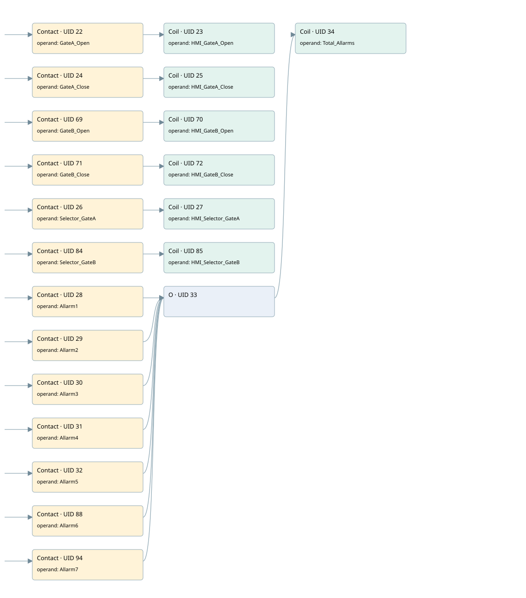

hmi pv_2gate
hmi pv_2gate · 검색 색인 순서 1 · 원본 내부 NID 추정 1
백업 PLF 원본의 2988793 바이트 위치에서 복원한 XML. 검색 문서 347의 객체 키 161022005017000000000000와 연결했다. 이름 해석 20/20개. 남은 RefId는 상수 또는 미해석 참조다.
연결 구조 다시 그리기
원본 Part/PCon/Wire를 이용한 연결도다. TIA 화면의 래더 배치 또는 실행 결과를 재현한 그림은 아니다. 핀 연결은 아래 표와 원본 XML을 기준으로 읽는다. 노드 위에 마우스를 두면 피연산자 이름을 볼 수 있다.

접점·코일·블록과 피연산자
| Part UID | Gate | Negated 핀 | 연결 피연산자 |
|---|---|---|---|
| 22 | Contact | operand = GateA_Open | |
| 23 | Coil | operand = HMI_GateA_Open | |
| 24 | Contact | operand = GateA_Close | |
| 25 | Coil | operand = HMI_GateA_Close | |
| 69 | Contact | operand = GateB_Open | |
| 70 | Coil | operand = HMI_GateB_Open | |
| 71 | Contact | operand = GateB_Close | |
| 72 | Coil | operand = HMI_GateB_Close | |
| 26 | Contact | operand = Selector_GateA | |
| 27 | Coil | operand = HMI_Selector_GateA | |
| 84 | Contact | operand = Selector_GateB | |
| 85 | Coil | operand = HMI_Selector_GateB | |
| 28 | Contact | operand = Allarm1 | |
| 29 | Contact | operand = Allarm2 | |
| 30 | Contact | operand = Allarm3 | |
| 31 | Contact | operand = Allarm4 | |
| 32 | Contact | operand = Allarm5 | |
| 88 | Contact | operand = Allarm6 | |
| 94 | Contact | operand = Allarm7 | |
| 33 | O | ||
| 34 | Coil | operand = Total_Allarms |
접점 경로를 펼친 조건식
Contact·O/A·비교기의 원본 연결을 읽기 쉽게 펼친 보조 해석이다. POWER는 전원 레일 시작을 뜻한다. 호출 블록·에지·타이머의 내부 동작과 다중 쓰기 순서는 이 표로 실행 검증하지 않았다. 미해석 핀과 RefId는 원문 연결표에서 확인한다.
| UID | 동작 | 대상 | 원본 접점 경로 | 내용 |
|---|---|---|---|---|
| 23 | Coil | HMI_GateA_Open | GateA_Open | 조건에 따른 Coil 기록 |
| 25 | Coil | HMI_GateA_Close | GateA_Close | 조건에 따른 Coil 기록 |
| 70 | Coil | HMI_GateB_Open | GateB_Open | 조건에 따른 Coil 기록 |
| 72 | Coil | HMI_GateB_Close | GateB_Close | 조건에 따른 Coil 기록 |
| 27 | Coil | HMI_Selector_GateA | Selector_GateA | 조건에 따른 Coil 기록 |
| 85 | Coil | HMI_Selector_GateB | Selector_GateB | 조건에 따른 Coil 기록 |
| 34 | Coil | Total_Allarms | (Allarm1 OR Allarm2 OR Allarm3 OR Allarm4 OR Allarm5 OR Allarm6 OR Allarm7) | 조건에 따른 Coil 기록 |
원본 배선 연결
| Wire UID | 동일 Wire 연결 끝점 |
|---|---|
| 21 | Powerrail {} ↔ Part 22.in ↔ Part 24.in ↔ Part 69.in ↔ Part 71.in ↔ Part 26.in ↔ Part 84.in ↔ Part 28.in ↔ Part 29.in ↔ Part 30.in ↔ Part 31.in ↔ Part 32.in ↔ Part 88.in ↔ Part 94.in |
| 48 | ORef 35 (GateA_Open) ↔ Part 22.operand |
| 49 | Part 22.out ↔ Part 23.in |
| 50 | ORef 36 (HMI_GateA_Open) ↔ Part 23.operand |
| 51 | ORef 37 (GateA_Close) ↔ Part 24.operand |
| 52 | Part 24.out ↔ Part 25.in |
| 53 | ORef 38 (HMI_GateA_Close) ↔ Part 25.operand |
| 78 | ORef 73 (GateB_Open) ↔ Part 69.operand |
| 79 | Part 69.out ↔ Part 70.in |
| 80 | ORef 74 (HMI_GateB_Open) ↔ Part 70.operand |
| 81 | ORef 75 (GateB_Close) ↔ Part 71.operand |
| 82 | Part 71.out ↔ Part 72.in |
| 83 | ORef 76 (HMI_GateB_Close) ↔ Part 72.operand |
| 54 | ORef 39 (Selector_GateA) ↔ Part 26.operand |
| 55 | Part 26.out ↔ Part 27.in |
| 56 | ORef 40 (HMI_Selector_GateA) ↔ Part 27.operand |
| 89 | ORef 86 (Selector_GateB) ↔ Part 84.operand |
| 90 | Part 84.out ↔ Part 85.in |
| 91 | ORef 87 (HMI_Selector_GateB) ↔ Part 85.operand |
| 57 | ORef 41 (Allarm1) ↔ Part 28.operand |
| 58 | Part 28.out ↔ Part 33.in1 |
| 59 | ORef 42 (Allarm2) ↔ Part 29.operand |
| 60 | Part 29.out ↔ Part 33.in2 |
| 61 | ORef 43 (Allarm3) ↔ Part 30.operand |
| 62 | Part 30.out ↔ Part 33.in3 |
| 63 | ORef 44 (Allarm4) ↔ Part 31.operand |
| 64 | Part 31.out ↔ Part 33.in4 |
| 65 | ORef 45 (Allarm5) ↔ Part 32.operand |
| 66 | Part 32.out ↔ Part 33.in5 |
| 77 | ORef 92 (Allarm6) ↔ Part 88.operand |
| 97 | Part 88.out ↔ Part 33.in6 |
| 93 | ORef 95 (Allarm7) ↔ Part 94.operand |
| 98 | Part 94.out ↔ Part 33.in7 |
| 67 | Part 33.out ↔ Part 34.in |
| 68 | ORef 46 (Total_Allarms) ↔ Part 34.operand |
식별자 해석 근거 20개
| ORef UID | RefId | 이름 | IdentXmlPart 파일 | 해석 방법 |
|---|---|---|---|---|
| 35 | 13 | GateA_Open | 0631-IdentXmlPart.xml | UID/RID + search-text + NID agreement |
| 36 | 15 | HMI_GateA_Open | 0631-IdentXmlPart.xml | UID/RID + search-text + NID agreement |
| 37 | 14 | GateA_Close | 0631-IdentXmlPart.xml | UID/RID + search-text + NID agreement |
| 38 | 16 | HMI_GateA_Close | 0631-IdentXmlPart.xml | UID/RID + search-text + NID agreement |
| 73 | 17 | GateB_Open | 0631-IdentXmlPart.xml | UID/RID + search-text + NID agreement |
| 74 | 19 | HMI_GateB_Open | 0631-IdentXmlPart.xml | UID/RID + search-text + NID agreement |
| 75 | 18 | GateB_Close | 0631-IdentXmlPart.xml | UID/RID + search-text + NID agreement |
| 76 | 20 | HMI_GateB_Close | 0631-IdentXmlPart.xml | UID/RID + search-text + NID agreement |
| 39 | 21 | Selector_GateA | 0631-IdentXmlPart.xml | UID/RID + search-text + NID agreement |
| 40 | 22 | HMI_Selector_GateA | 0631-IdentXmlPart.xml | UID/RID + search-text + NID agreement |
| 86 | 23 | Selector_GateB | 0631-IdentXmlPart.xml | UID/RID + search-text + NID agreement |
| 87 | 24 | HMI_Selector_GateB | 0631-IdentXmlPart.xml | UID/RID + search-text + NID agreement |
| 41 | 25 | Allarm1 | 0631-IdentXmlPart.xml | UID/RID + search-text + NID agreement |
| 42 | 26 | Allarm2 | 0631-IdentXmlPart.xml | UID/RID + search-text + NID agreement |
| 43 | 27 | Allarm3 | 0631-IdentXmlPart.xml | UID/RID + search-text + NID agreement |
| 44 | 28 | Allarm4 | 0631-IdentXmlPart.xml | UID/RID + search-text + NID agreement |
| 45 | 29 | Allarm5 | 0631-IdentXmlPart.xml | UID/RID + search-text + NID agreement |
| 92 | 31 | Allarm6 | 0631-IdentXmlPart.xml | UID/RID + search-text + NID agreement |
| 95 | 32 | Allarm7 | 0631-IdentXmlPart.xml | UID/RID + search-text + NID agreement |
| 46 | 30 | Total_Allarms | 0631-IdentXmlPart.xml | UID/RID + search-text + NID agreement |
검색 코드 보조 자료
참조 명칭을 찾기 위한 자료이며 실행 순서나 AND/OR 관계는 위 연결표로 확인한다.
#gatea_open #hmi_gatea_open #gatea_close #hmi_gatea_close #gateb_open #hmi_gateb_open #gateb_close #hmi_gateb_close #selector_gatea #hmi_selector_gatea #selector_gateb #hmi_selector_gateb #allarm1 #total_allarms #allarm2 #allarm3 #allarm4 #allarm5 #allarm6 #allarm7